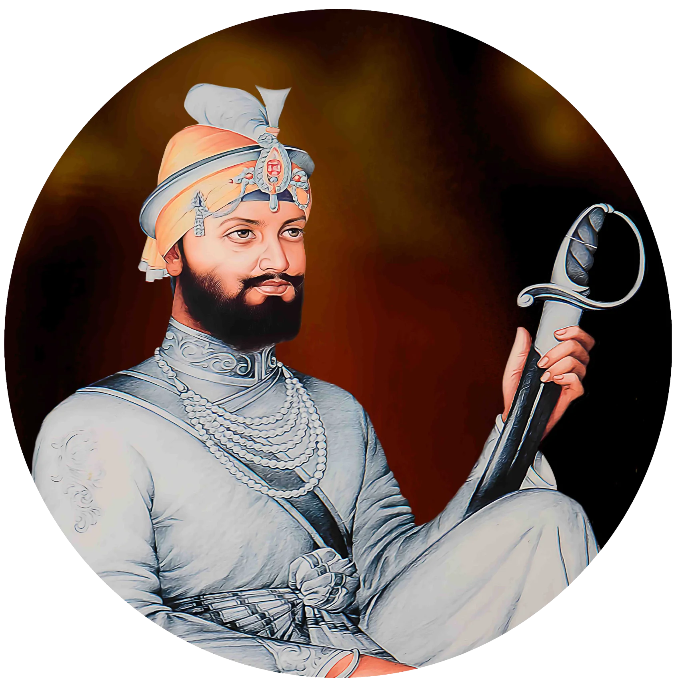
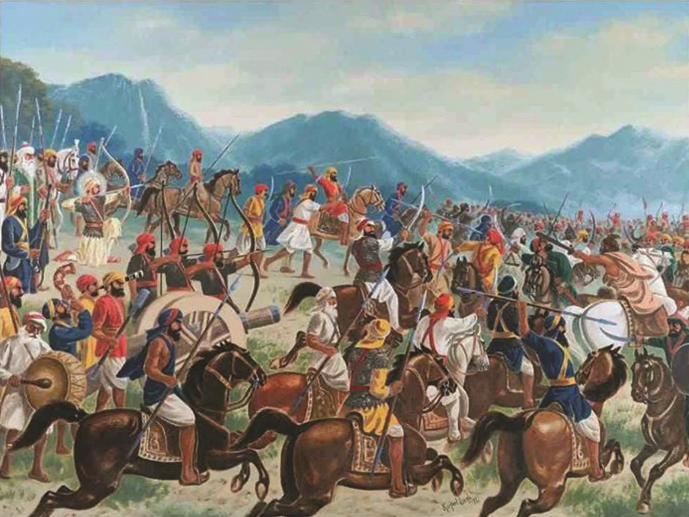
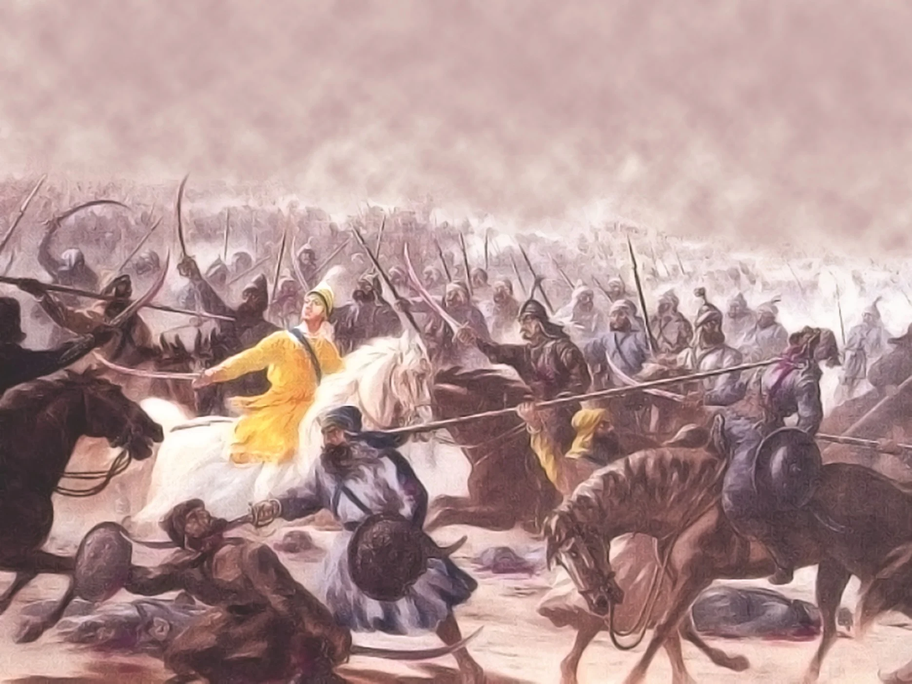
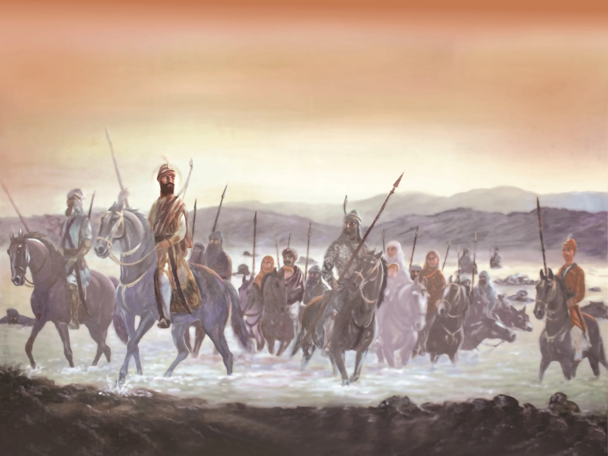

Guru Gobind Singh Ji



Guru Gobind Singh Ji

Painting depicting Guru Gobind Singh's first battle at Bhangani

Battle of Chamkaur Sahib

Guru Gobind Singh, the Tenth Sikh Guru, in battle
Guru Gobind Singh Ji
Painting depicting Guru Gobind Singh's first battle at Bhangani
Battle of Chamkaur Sahib
Guru Gobind Singh, the Tenth Sikh Guru, in battle
Title: Guru Gobind Singh Ji
Category: Religious Corner
Artist: Historical Figure
Year: 1666 – 1708
Category: Religious Corner
Artist: Historical Figure
Year: 1666 – 1708
GURU GOBIND SINGH JI
He was born at Patna on 22 December 1666 to Guru Tegh Bahadur and Mata Gujri. Taking over at the age of nine, the experience of his father's martyrdom shaped his future outlook and actions. At Anandpur, he had to face belligerence of the Hill Rajas, who were irked by Sikhism's egalitarian character and growing popularity. Guru Gobind established a new settlement, Paonta Sahib in the foothills, from where he fought several decisive battles against the Hill Rajas. Around Anandpur, he built several strong fortifications, completed 'Bachittar Natak' and oversaw translations of many scriptures including the Upanishads. On Baisakhi Day in 1699, he proclaimed birth of the Khalsa ('pure ones') baptizing the Sikhs into a casteless fraternity, giving them a distinctive cultural identity. He also prescribed five emblems for the Khalsa and gave them one family name - 'Singh', meaning 'Lion'. The Guru's army fought valiantly against Mughals at Anandpur, Chamkaur, Machiwara, Kot Kapura & Khidrana. While camping at Nanded on the banks of Godavari River, the tenth Guru died on 07 October 1708 due to an assassination attempt made earlier. Before dying, he proclaimed that the line of living Gurus would end with him and the Sikhs would look upon the Guru Granth Sahib as a symbol of all the ten Gurus and be their constant guide.
'O Lord, these boons of Thee I ask,
Let me never shun a righteous task.
Let me be fearless when I go to battle,
Give me faith that victory will be mine.
Give me power to sing Thy praise.
And when comes the time to end my life,
Let me fall in mighty strife'
Guru Gobind Singh, in Chandi Charitra
He was born at Patna on 22 December 1666 to Guru Tegh Bahadur and Mata Gujri. Taking over at the age of nine, the experience of his father's martyrdom shaped his future outlook and actions. At Anandpur, he had to face belligerence of the Hill Rajas, who were irked by Sikhism's egalitarian character and growing popularity. Guru Gobind established a new settlement, Paonta Sahib in the foothills, from where he fought several decisive battles against the Hill Rajas. Around Anandpur, he built several strong fortifications, completed 'Bachittar Natak' and oversaw translations of many scriptures including the Upanishads. On Baisakhi Day in 1699, he proclaimed birth of the Khalsa ('pure ones') baptizing the Sikhs into a casteless fraternity, giving them a distinctive cultural identity. He also prescribed five emblems for the Khalsa and gave them one family name - 'Singh', meaning 'Lion'. The Guru's army fought valiantly against Mughals at Anandpur, Chamkaur, Machiwara, Kot Kapura & Khidrana. While camping at Nanded on the banks of Godavari River, the tenth Guru died on 07 October 1708 due to an assassination attempt made earlier. Before dying, he proclaimed that the line of living Gurus would end with him and the Sikhs would look upon the Guru Granth Sahib as a symbol of all the ten Gurus and be their constant guide.
'O Lord, these boons of Thee I ask,
Let me never shun a righteous task.
Let me be fearless when I go to battle,
Give me faith that victory will be mine.
Give me power to sing Thy praise.
And when comes the time to end my life,
Let me fall in mighty strife'
Guru Gobind Singh, in Chandi Charitra

🇬🇧 English
🇮🇳 हिन्दी
ੴ ਪੰਜਾਬੀ
Open on Mobile
Scan this QR code to view and switch between English, Hindi, or Punjabi on your phone.